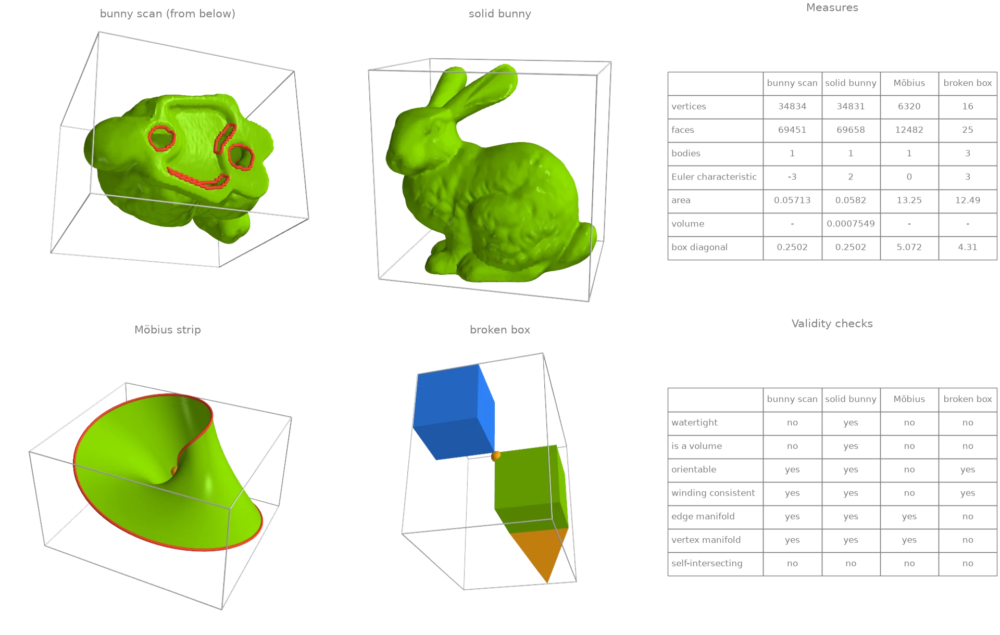
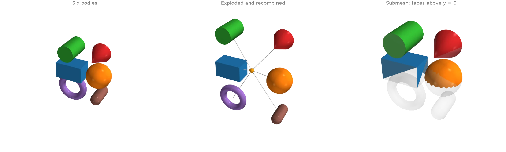
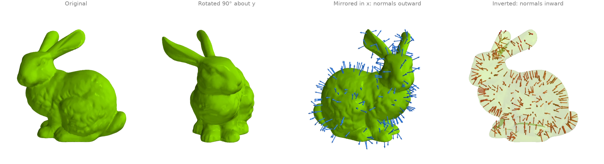
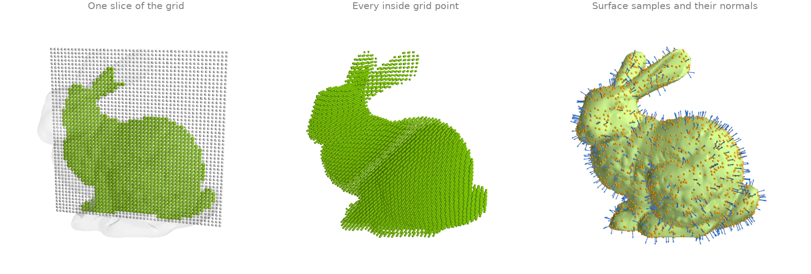
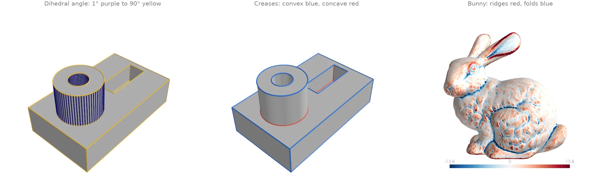
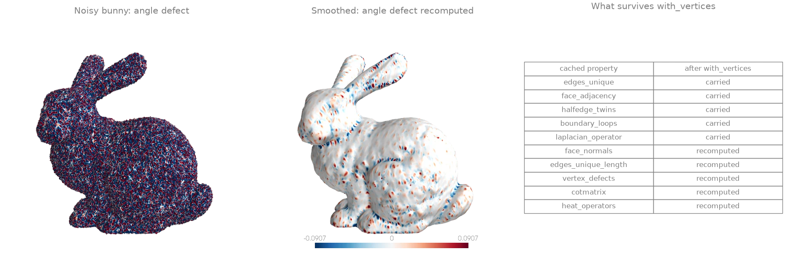
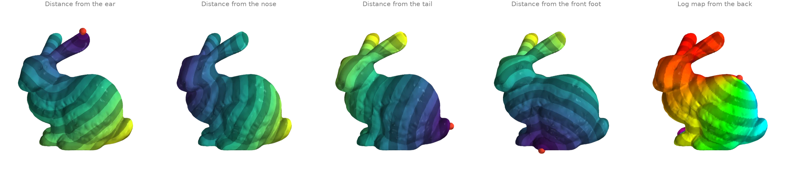

The Trimesh object
ordito.Trimesh bundles a mesh's vertex and face buffers with lazily
computed, cached properties, in the style of trimesh.Trimesh. Every property runs on the
mesh's device, and each is computed once and reused until the mesh changes.
Quick start: build a mesh and read its properties
A Trimesh wraps a vertex buffer and a face buffer (or an existing
warp.Mesh, through from_warp_mesh). Every property
is computed on the mesh's device the first time it is read and cached after that. Four inputs
with different defects are compared here: the bunny as scanned, with five holes in its base;
the same bunny closed by make_solid; a Möbius strip; and two
cubes that touch at one corner, with a fin glued to one edge. The validity checks tell them
apart. Note that is_watertight follows Open3D's
definition, so it also requires a manifold surface with no self-intersections.
import ordito as od
from examples import data
scan = od.Trimesh(*data.load("bunny", device))
meshes = {
"bunny scan": scan,
"solid bunny": od.Trimesh(*od.repair.make_solid(scan.vertices, scan.faces)),
"Möbius strip": od.Trimesh(*data.load("mobius", device)),
"broken box": od.Trimesh(*data.load("broken_box", device)),
}
for name, mesh in meshes.items():
print(
f"{name:>12}: {mesh.n_faces:6d} faces, {mesh.body_count} bodies, "
f"Euler {mesh.euler_characteristic:2d}, {len(mesh.boundary_loops)} boundary loops, "
f"watertight {mesh.is_watertight}"
)
bunny scan: 69451 faces, 1 bodies, Euler -3, 5 boundary loops, watertight False
solid bunny: 69658 faces, 1 bodies, Euler 2, 0 boundary loops, watertight True
Möbius strip: 12482 faces, 1 bodies, Euler 0, 1 boundary loops, watertight False
broken box: 25 faces, 3 bodies, Euler 3, 0 boundary loops, watertight False

Volume is left blank for the three meshes that do not enclose a volume
(is_volume is false): its integral is only meaningful on a
closed, consistently wound surface. For the same reason the orange dot is the centre of mass
of the solid bunny and the area-weighted surface centroid elsewhere. Bodies are counted across
edges shared by exactly two faces, so the broken box's fin is a body of its own.
Modelled on: trimesh: quick start · Open3D: mesh properties · libigl 701 · PyMeshLab: measures
Bodies: split, explode and recombine
Six primitives packed into one buffer form six bodies.
face_connected_component_labels names
each face's body and body_count counts them.
split turns them into one Trimesh each. Every body is then
moved away from the assembly's centre of mass with
transform, and + concatenates the moved bodies back into
one mesh: an exploded view. submesh cuts out a selection of
faces as a mesh of its own.
import functools
import operator
import numpy as np
import warp as wp
import ordito as od
from examples import data
mesh = od.Trimesh(*data.load("parts", device))
labels = mesh.face_connected_component_labels
print(f"{mesh.body_count} bodies, volume {mesh.volume:.3f}")
center = np.array(mesh.center_mass)
exploded = [
body.transform(
od.transform.translation_matrix((0.8 * (np.array(body.center_mass) - center)).tolist())
)
for body in mesh.split()
]
recombined = functools.reduce(operator.add, exploded)
print(f"recombined: {recombined.n_faces} faces in {recombined.body_count} bodies")
upper_half = mesh.submesh(
wp.array(mesh.triangles_center.numpy()[:, 1] > 0.0, dtype=wp.bool, device=device)
)
print(f"upper half: {upper_half.n_faces} faces in {upper_half.body_count} bodies")
6 bodies, volume 1.350
recombined: 5036 faces in 6 bodies
upper half: 918 faces in 4 bodies

Modelled on: trimesh: quick start · libigl 809 · Open3D: connected components
Rigid and mirror transforms
transform returns a new mesh under a 4 x 4 matrix built
by rotation_matrix or
reflection_matrix. It classifies the matrix first and
carries every cached value the transform preserves: after a rotation the cotangent Laplacian
cotmatrix is the same object, not a new assembly. A mirror
also reverses the winding of every face, so the mirrored bunny keeps outward normals and a
positive volume. invert reverses the winding without moving
anything, which turns the solid inside out.
import math
import ordito as od
from examples import data
mesh = od.Trimesh(*od.repair.make_solid(*data.load("bunny", device)))
laplacian = mesh.cotmatrix # assembled once here
spun = mesh.transform(od.transform.rotation_matrix((0.0, 1.0, 0.0), math.pi / 2, mesh.centroid))
mirrored = mesh.transform(od.transform.reflection_matrix((1.0, 0.0, 0.0), mesh.centroid))
inverted = mesh.invert()
print(f"cotmatrix carried through the rotation: {spun.cotmatrix is laplacian}")
for name, m in [("original", mesh), ("rotated", spun), ("mirrored", mirrored)]:
print(f"{name:>9}: volume {m.volume:.3e}")
print(f" inverted: volume {inverted.volume:.3e}")
cotmatrix carried through the rotation: True
original: volume 7.549e-04
rotated: volume 7.549e-04
mirrored: volume 7.549e-04
inverted: volume -7.549e-04

Modelled on: trimesh: quick start · Open3D: transformation
Inside tests and surface samples
contains classifies query points as inside or outside by ray
parity against the mesh's cached BVH, so it needs a closed surface: the bunny is first closed
by make_solid. sample draws
area-uniform points on the surface and returns the face each point landed on, which indexes
face_normals.
import numpy as np
import warp as wp
import ordito as od
from examples import data
mesh = od.Trimesh(*od.repair.make_solid(*data.load("bunny", device)))
lower, upper = mesh.bounds
axes = [np.linspace(low, high, 48) for low, high in zip(lower, upper, strict=True)]
grid = np.stack(np.meshgrid(*axes, indexing="ij"), axis=-1).reshape(-1, 3)
inside = mesh.contains(wp.array(grid, dtype=wp.vec3, device=device)).numpy()
print(f"{inside.sum()} of {grid.shape[0]} grid points are inside")
points, face_index = mesh.sample(3000, seed=0)
normals = mesh.face_normals.numpy()[face_index.numpy()]
print(f"{points.shape[0]} samples on a surface of area {mesh.area:.4f}")
27005 of 110592 grid points are inside
3000 samples on a surface of area 0.0582

Modelled on: trimesh: quick start · Open3D: mesh sampling
Edge structure: dihedral angles, convexity and boundaries
Every pair of faces sharing an edge is a row of
face_adjacency, with the shared vertex pair in
face_adjacency_edges. The angle between the two
face normals is face_adjacency_angles, and
face_adjacency_convex says whether the edge
folds outward (a ridge) or inward (a valley). Thresholding the angle picks out the creases of
a machined part. On the scanned bunny, the signed angle averaged around each vertex separates
ridges from folds. boundary_edges counts the edges on
the rims of the holes in the bunny's base.
import numpy as np
import ordito as od
from examples import data
out = {}
for name, threshold in [("cad_part", 30.0), ("bunny", 40.0)]:
mesh = od.Trimesh(*data.load(name, device))
angles = np.degrees(mesh.face_adjacency_angles.numpy())
convex = mesh.face_adjacency_convex.numpy()
sharp = angles > threshold
print(
f"{name}: {mesh.edges_unique.shape[0]} edges, {sharp.sum()} sharper than "
f"{threshold:.0f}° ({(sharp & convex).sum()} convex, "
f"{(sharp & ~convex).sum()} concave), {mesh.boundary_edges.shape[0]} on the boundary"
)
out[name] = (mesh.face_adjacency_edges.numpy(), angles, convex, sharp)
cad_part: 720 edges, 248 sharper than 30° (176 convex, 72 concave), 0 on the boundary
bunny: 104288 edges, 550 sharper than 40° (331 convex, 219 concave), 223 on the boundary

Modelled on: trimesh: quick start · trimesh: examples
Caching and functional updates
A Trimesh is frozen: an update returns a new mesh and decides which
cached values are still valid. with_vertices keeps the
faces, so it carries forward every cache that is computed from the faces alone. These are the
edge tables, face adjacency, half-edges, boundaries, manifold and orientation checks, body
count and the uniform laplacian_operator. Anything
that reads positions is recomputed on first access: normals, areas, angles, edge lengths,
vertex_defects, the BVH, the cotangent operators and
the heat bundles. Here the noisy bunny is smoothed with
filter_taubin, reusing the cached uniform Laplacian, and the
angle defect (discrete Gaussian curvature) is read again on the smoothed mesh.
import ordito as od
from examples import data
mesh = od.Trimesh(*data.load("noisy_bunny", device))
names = [
"edges_unique",
"face_adjacency",
"halfedge_twins",
"boundary_loops",
"laplacian_operator",
"face_normals",
"edges_unique_length",
"vertex_defects",
"cotmatrix",
"heat_operators",
]
before = {name: getattr(mesh, name) for name in names} # compute and cache
smoothed_vertices = od.smoothing.filter_taubin(
mesh.vertices, mesh.faces, iterations=20, laplacian_operator=mesh.laplacian_operator
)
smoothed = mesh.with_vertices(smoothed_vertices)
kept = [name for name in names if getattr(smoothed, name) is before[name]]
print("carried forward:", ", ".join(kept))
print("recomputed: ", ", ".join(name for name in names if name not in kept))
print(f"mean edge length {mesh.mean_edge_length:.6f} -> {smoothed.mean_edge_length:.6f}")
carried forward: edges_unique, face_adjacency, halfedge_twins, boundary_loops, laplacian_operator
recomputed: face_normals, edges_unique_length, vertex_defects, cotmatrix, heat_operators
mean edge length 0.001593 -> 0.001443

with_faces carries nothing, since every cached value
depends on the faces. copy makes independent buffers, and
invalidate clears the cache after a buffer has been
edited in place by a kernel.
Modelled on: trimesh: caching
Reusing cached operators
The discrete operators of a mesh depend on the mesh alone, so a
Trimesh assembles each of them once and hands the same object to
every solve. Here heat_operators serves four
heat_geodesic calls from four different sources, and the
mesh's heat_solver keeps the factorizations built on the
second, so the last two run no iteration.
vector_heat_operators holds that same scalar
bundle and the vertex_tangent_frames, and feeds
log_map: every vertex's position in the tangent plane of a source
vertex, drawn with hue for its direction and stripes for its distance. The cotangent matrix
cotmatrix and lumped mass
mass_matrix_entries are cached the same way, for
callers that assemble their own systems.
import warp as wp
import ordito as od
from examples import data
mesh = od.Trimesh(*data.load("bunny", device))
operators = mesh.heat_operators # assembled here, once
distances = {}
for name, vertex in {"ear": 22820, "nose": 11842, "tail": 12217, "front foot": 34264}.items():
source = wp.array([vertex], dtype=wp.int32, device=device)
distances[name] = od.heat.heat_geodesic(mesh, source).numpy()
print(f"from the {name:<10}: farthest point at {distances[name].max():.4f}")
vector_operators = mesh.vector_heat_operators
print("vector bundle reuses the scalar one:", vector_operators[1] is operators)
log = od.heat.log_map(mesh, 16308)
from the ear : farthest point at 0.2396
from the nose : farthest point at 0.2115
from the tail : farthest point at 0.2409
from the front foot: farthest point at 0.2201
vector bundle reuses the scalar one: True

Modelled on: potpourri3d · libigl 716